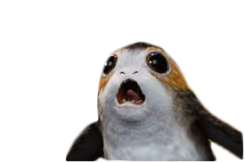

The Porg Adventures

The Porg Backstory

Porgs are a species of sea-dwelling bird. They are nativeto the planet Ahch-To, where Jedi Master Luke Skywalker made his exile in the year prior to the Battle of Crait. Porgs understand some languages. When they overheard Rey refer to Chewbacca as "Chewie" they mistook it be the word chewy leading them to wonder whether Chewbacca would serve as her food. They are curious throughout the islands of the planet Ahch-To. They were capable of diving to fetch fish and feed their offspring "porglets." Porgs exhibited a roosting behavior, and they built nests along the island cliffs.[1] They built nests from hair, fiber or grass and decorated them with shiny objects they had acquired.[5] Porgs loved water, both to drink and to play in. They also loved tasting new things.[5] Porgs had strong natural camouflaging abilities,[6] as well as many interesting calls, ranging from burbles to squeaks to song.[5] They crooned a special song when they were pleased. However, they could also be completely silent when necessary. Despite their curious nature, they could be quite shy if they felt threatened. Porgs, both wild and domesticated alike, were unusually smitten by human objects, and found shiny objects very fascinating. If their curiosity ran unchecked, they could wreak havoc. Porgs enjoyed being petted and scratched, especially behind their ears. (Wookopedia StarWars Wiki)
Porgs at Hill House
In a galaxy far far away, the Porg family returns to Hill House to find clues to what happened many years ago before the haunting began. Akina the oldest, leads the way as they drive over 1000 miles to get there. Each porg has different memories of the house and they are a bit nervous on the drive there.
The Red Room
What Should I Do?
Akina's siblings have been captured by the ghost porgs in the Red Room. She will need to decide if she goes into the Room to save them or if she will remain outside to make sure others don't suffer the same fate.
May the Force Be With You!
Akina, faced with the choice of joining the others in Red Room she makes a different decision. She decides to go off on her own, but as she leaves the others behind she starts to feel the ghost porgs getting closer. Akina knows that if she can just get down into the hallway onto the first floor, she will be safe. She scream out with a cry that porgs usually use when they are in danger. What will happen next?
